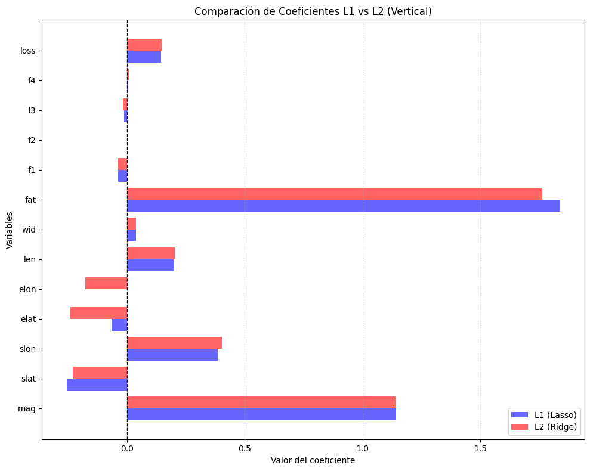
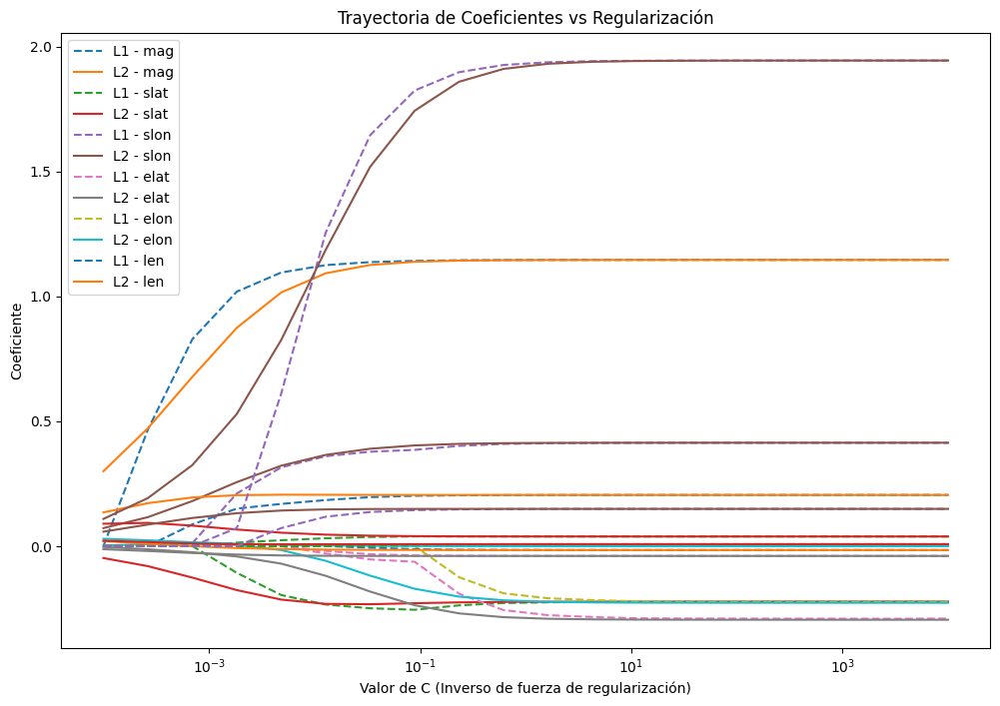
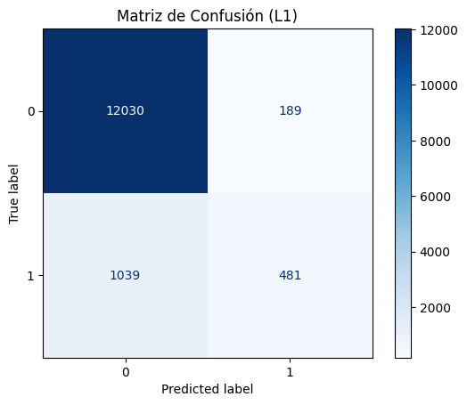

Cargue de Datos para el Modelo Lasso_Ridg_Regresión_Logistica#
import numpy as np
import pandas as pd
import matplotlib.pyplot as plt
import seaborn as sns
import warnings
warnings.filterwarnings('ignore')
import plotly.express as px
import plotly.graph_objects as go
from sklearn.model_selection import train_test_split
from sklearn.linear_model import LinearRegression
from sklearn.metrics import mean_squared_error, r2_score
import os
for dirname, _, filenames in os.walk('/kaggle/input'):
for filename in filenames:
print(os.path.join(dirname, filename))
ruta = r'C:/Users/wmanj/OneDrive/Escritorio/MACHINELEARNING/tornados.csv'
df = pd.read_csv(ruta)
df['loss'] = df['loss'].replace(0, pd.NA)
df['loss'] = df['loss'].interpolate(method='linear')
df['mag'] = df['mag'].fillna(df['mag'].mean())
df.isnull().sum()
---------------------------------------------------------------------------
FileNotFoundError Traceback (most recent call last)
Cell In[1], line 21
17 print(os.path.join(dirname, filename))
20 ruta = r'C:/Users/wmanj/OneDrive/Escritorio/MACHINELEARNING/tornados.csv'
---> 21 df = pd.read_csv(ruta)
22 df['loss'] = df['loss'].replace(0, pd.NA)
23 df['loss'] = df['loss'].interpolate(method='linear')
File ~\miniconda3\envs\ml_venv\lib\site-packages\pandas\io\parsers\readers.py:948, in read_csv(filepath_or_buffer, sep, delimiter, header, names, index_col, usecols, dtype, engine, converters, true_values, false_values, skipinitialspace, skiprows, skipfooter, nrows, na_values, keep_default_na, na_filter, verbose, skip_blank_lines, parse_dates, infer_datetime_format, keep_date_col, date_parser, date_format, dayfirst, cache_dates, iterator, chunksize, compression, thousands, decimal, lineterminator, quotechar, quoting, doublequote, escapechar, comment, encoding, encoding_errors, dialect, on_bad_lines, delim_whitespace, low_memory, memory_map, float_precision, storage_options, dtype_backend)
935 kwds_defaults = _refine_defaults_read(
936 dialect,
937 delimiter,
(...)
944 dtype_backend=dtype_backend,
945 )
946 kwds.update(kwds_defaults)
--> 948 return _read(filepath_or_buffer, kwds)
File ~\miniconda3\envs\ml_venv\lib\site-packages\pandas\io\parsers\readers.py:611, in _read(filepath_or_buffer, kwds)
608 _validate_names(kwds.get("names", None))
610 # Create the parser.
--> 611 parser = TextFileReader(filepath_or_buffer, **kwds)
613 if chunksize or iterator:
614 return parser
File ~\miniconda3\envs\ml_venv\lib\site-packages\pandas\io\parsers\readers.py:1448, in TextFileReader.__init__(self, f, engine, **kwds)
1445 self.options["has_index_names"] = kwds["has_index_names"]
1447 self.handles: IOHandles | None = None
-> 1448 self._engine = self._make_engine(f, self.engine)
File ~\miniconda3\envs\ml_venv\lib\site-packages\pandas\io\parsers\readers.py:1705, in TextFileReader._make_engine(self, f, engine)
1703 if "b" not in mode:
1704 mode += "b"
-> 1705 self.handles = get_handle(
1706 f,
1707 mode,
1708 encoding=self.options.get("encoding", None),
1709 compression=self.options.get("compression", None),
1710 memory_map=self.options.get("memory_map", False),
1711 is_text=is_text,
1712 errors=self.options.get("encoding_errors", "strict"),
1713 storage_options=self.options.get("storage_options", None),
1714 )
1715 assert self.handles is not None
1716 f = self.handles.handle
File ~\miniconda3\envs\ml_venv\lib\site-packages\pandas\io\common.py:863, in get_handle(path_or_buf, mode, encoding, compression, memory_map, is_text, errors, storage_options)
858 elif isinstance(handle, str):
859 # Check whether the filename is to be opened in binary mode.
860 # Binary mode does not support 'encoding' and 'newline'.
861 if ioargs.encoding and "b" not in ioargs.mode:
862 # Encoding
--> 863 handle = open(
864 handle,
865 ioargs.mode,
866 encoding=ioargs.encoding,
867 errors=errors,
868 newline="",
869 )
870 else:
871 # Binary mode
872 handle = open(handle, ioargs.mode)
FileNotFoundError: [Errno 2] No such file or directory: 'C:/Users/wmanj/OneDrive/Escritorio/MACHINELEARNING/tornados.csv'
from sklearn.model_selection import train_test_split
from sklearn.linear_model import LinearRegression
# Definir X y y (asegúrate de que ya tienes estas variables previamente definidas)
X = df[['mag', 'slat', 'slon', 'elat', 'elon', 'len', 'wid','fat','f1', 'f2', 'f3', 'f4','loss']]
y = df['inj']
# Dividir los datos en conjunto de entrenamiento y prueba (80% entrenamiento, 20% prueba)
X_train, X_test, y_train, y_test = train_test_split(X, y, test_size=0.2, random_state=42)
# Crear y ajustar el modelo de regresión lineal
lr = LinearRegression().fit(X_train, y_train)
# Mostrar los coeficientes y el intercepto del modelo
print("Coeficientes del modelo:", lr.coef_)
print("Intercepto del modelo:", lr.intercept_)
# Hacer predicciones con el modelo en el conjunto de prueba
y_pred = lr.predict(X_test)
# Evaluar el modelo con la puntuación R^2 (coeficiente de determinación)
r2_score = lr.score(X_test, y_test)
print(f"Puntuación R^2 en el conjunto de prueba: {r2_score}")
Coeficientes del modelo: [ 1.03933097e+00 -2.34167006e-02 5.48057092e-03 1.67695299e-02
1.01654786e-02 1.32225799e-01 8.84202034e-04 7.64548959e+00
-6.75772303e-04 9.71291867e-04 1.96154227e-03 9.77616370e-03
1.14162944e-07]
Intercepto del modelo: 0.8017899647209744
Puntuación R^2 en el conjunto de prueba: 0.6574705265235996
from sklearn.linear_model import LogisticRegression
from sklearn.metrics import accuracy_score, classification_report
# Convertir 'inj' a binario si no lo es (ej: 0=no heridos, 1=heridos)
y_binary = (y > 0).astype(int) # Ajusta según tu contexto
# Dividir datos
X_train, X_test, y_train, y_test = train_test_split(X, y_binary, test_size=0.2, random_state=42)
# Modelo con penalización L1 (Lasso) o L2 (Ridge)
model_l1 = LogisticRegression(penalty='l1', solver='liblinear', C=1.0).fit(X_train, y_train) # L1
model_l2 = LogisticRegression(penalty='l2', solver='liblinear', C=1.0).fit(X_train, y_train) # L2
# Evaluación
print("Precisión (L1):", accuracy_score(y_test, model_l1.predict(X_test)))
print("Reporte (L1):\n", classification_report(y_test, model_l1.predict(X_test)))
print("Precisión (L2):", accuracy_score(y_test, model_l2.predict(X_test)))
print("Reporte (L2):\n", classification_report(y_test, model_l2.predict(X_test)))
Precisión (L1): 0.9091636945920373
Reporte (L1):
precision recall f1-score support
0 0.92 0.98 0.95 12219
1 0.69 0.33 0.44 1520
accuracy 0.91 13739
macro avg 0.81 0.65 0.70 13739
weighted avg 0.90 0.91 0.89 13739
Precisión (L2): 0.8906033918043526
Reporte (L2):
precision recall f1-score support
0 0.90 0.99 0.94 12219
1 0.53 0.10 0.16 1520
accuracy 0.89 13739
macro avg 0.71 0.54 0.55 13739
weighted avg 0.86 0.89 0.86 13739
from sklearn.preprocessing import StandardScaler
scaler = StandardScaler().fit(X_train)
X_train_scaled = scaler.transform(X_train)
X_test_scaled = scaler.transform(X_test)
from sklearn.model_selection import GridSearchCV
# Ejemplo para Regresión Logística con L1
param_grid = {'C': [0.001, 0.01, 0.1, 1, 10], 'penalty': ['l1', 'l2']}
grid_search = GridSearchCV(LogisticRegression(solver='liblinear'), param_grid, cv=5)
grid_search.fit(X_train_scaled, y_train) # Usar datos escalados
print("Mejores parámetros:", grid_search.best_params_)
print("Mejor puntuación (R²/Accuracy):", grid_search.best_score_)
Mejores parámetros: {'C': 1, 'penalty': 'l1'}
Mejor puntuación (R²/Accuracy): 0.9072132886622681
import matplotlib.pyplot as plt
# Modelos entrenados
model_l1 = LogisticRegression(penalty='l1', C=0.1, solver='liblinear').fit(X_train_scaled, y_train)
model_l2 = LogisticRegression(penalty='l2', C=0.1, solver='liblinear').fit(X_train_scaled, y_train)
# Configurar el gráfico vertical
plt.figure(figsize=(10, 8)) # Ajustar tamaño para mejor visualización
# Posiciones en el eje Y
y_pos = range(len(X.columns))
# Barras horizontales
plt.barh(y_pos, model_l1.coef_[0], height=0.4, color='blue', alpha=0.6, label='L1 (Lasso)', align='center')
plt.barh([y + 0.4 for y in y_pos], model_l2.coef_[0], height=0.4, color='red', alpha=0.6, label='L2 (Ridge)', align='center')
# Etiquetas y diseño
plt.yticks([y + 0.2 for y in y_pos], X.columns) # Centrar etiquetas entre barras
plt.axvline(0, color='black', linestyle='--', linewidth=1)
plt.xlabel('Valor del coeficiente')
plt.ylabel('Variables')
plt.title('Comparación de Coeficientes L1 vs L2 (Vertical)')
plt.legend(loc='lower right') # Ubicación de la leyenda
plt.grid(axis='x', linestyle=':', alpha=0.6) # Líneas de guía verticales
plt.tight_layout() # Ajustar márgenes
plt.show()

import numpy as np
C_values = np.logspace(-4, 4, 20)
coefs_l1, coefs_l2 = [], []
for C in C_values:
l1 = LogisticRegression(penalty='l1', C=C, solver='liblinear').fit(X_train_scaled, y_train)
l2 = LogisticRegression(penalty='l2', C=C, solver='liblinear').fit(X_train_scaled, y_train)
coefs_l1.append(l1.coef_[0])
coefs_l2.append(l2.coef_[0])
# Gráfico de evolución de coeficientes
plt.figure(figsize=(12, 8))
for i, col in enumerate(X.columns):
plt.semilogx(C_values, [coef[i] for coef in coefs_l1], '--', label=f'L1 - {col}' if i < 6 else "")
plt.semilogx(C_values, [coef[i] for coef in coefs_l2], '-', label=f'L2 - {col}' if i < 6 else "")
plt.xlabel("Valor de C (Inverso de fuerza de regularización)")
plt.ylabel("Coeficiente")
plt.title("Trayectoria de Coeficientes vs Regularización")
plt.legend(loc='upper left')
plt.show()

from sklearn.metrics import confusion_matrix, ConfusionMatrixDisplay
cm = confusion_matrix(y_test, model_l1.predict(X_test_scaled))
disp = ConfusionMatrixDisplay(cm)
disp.plot(cmap='Blues')
plt.title("Matriz de Confusión (L1)")
plt.show()

from sklearn.linear_model import ElasticNet
from sklearn.preprocessing import StandardScaler
# Normalizar datos (requerido para modelos penalizados)
scaler = StandardScaler()
X_scaled = scaler.fit_transform(X)
# Entrenar Elastic Net (L1 + L2)
elastic_net = ElasticNet(alpha=0.1, l1_ratio=0.5, random_state=42)
elastic_net.fit(X_scaled, y)
# Obtener coeficientes y variables eliminadas (coef = 0)
coeficientes = elastic_net.coef_
variables_eliminadas = X.columns[coeficientes == 0] # Variables con peso 0
print("Variables eliminadas por L1 (coeficiente = 0):")
print(variables_eliminadas.tolist())
Variables eliminadas por L1 (coeficiente = 0):
['slat', 'elat', 'f2', 'f4']
from sklearn.linear_model import Lasso, Ridge
# Entrenar Lasso (L1) y Ridge (L2)
lasso = Lasso(alpha=0.1).fit(X_scaled, y)
ridge = Ridge(alpha=0.1).fit(X_scaled, y)
# Dataframe comparativo
import pandas as pd
df_coef = pd.DataFrame({
'Variable': X.columns,
'Lasso (L1)': lasso.coef_,
'Ridge (L2)': ridge.coef_,
'ElasticNet': elastic_net.coef_
})
print("Comparación de coeficientes:")
print(df_coef[df_coef['Lasso (L1)'] == 0]) # Variables eliminadas solo por L1
Comparación de coeficientes:
Variable Lasso (L1) Ridge (L2) ElasticNet
1 slat -0.0 -0.107442 -0.000000
3 elat -0.0 0.423810 -0.000000
8 f1 -0.0 -0.077614 -0.019149
9 f2 0.0 0.026335 0.000000
10 f3 0.0 0.031032 0.009142
11 f4 0.0 -0.018656 0.000000
from sklearn.metrics import roc_auc_score, roc_curve
import matplotlib.pyplot as plt
# Calcular probabilidades predichas (no las clases)
y_prob_l1 = model_l1.predict_proba(X_test)[:, 1] # Probabilidades para clase 1 (L1)
y_prob_l2 = model_l2.predict_proba(X_test)[:, 1] # Probabilidades para clase 1 (L2)
# Calcular AUC
auc_l1 = roc_auc_score(y_test, y_prob_l1)
auc_l2 = roc_auc_score(y_test, y_prob_l2)
print(f"AUC (L1): {auc_l1:.4f}")
print(f"AUC (L2): {auc_l2:.4f}")
# Generar curvas ROC
fpr_l1, tpr_l1, _ = roc_curve(y_test, y_prob_l1)
fpr_l2, tpr_l2, _ = roc_curve(y_test, y_prob_l2)
# Graficar curvas ROC
plt.figure(figsize=(8, 6))
plt.plot(fpr_l1, tpr_l1, color='blue', lw=2, label=f'L1 (AUC = {auc_l1:.2f})')
plt.plot(fpr_l2, tpr_l2, color='red', lw=2, label=f'L2 (AUC = {auc_l2:.2f})')
plt.plot([0, 1], [0, 1], color='gray', linestyle='--')
plt.xlabel('Tasa de Falsos Positivos (FPR)')
plt.ylabel('Tasa de Verdaderos Positivos (TPR)')
plt.title('Curva ROC - Comparación L1 vs L2')
plt.legend(loc='lower right')
plt.grid(True)
plt.show()
AUC (L1): 0.8785
AUC (L2): 0.7615